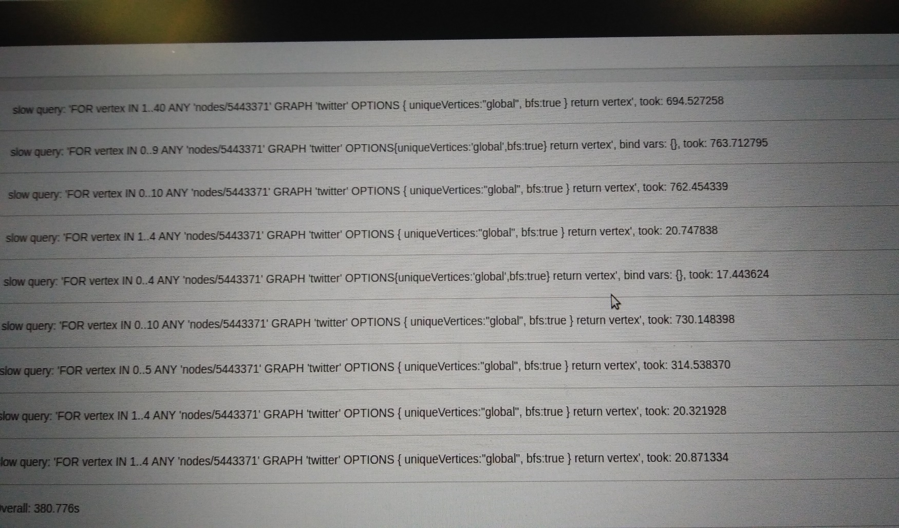
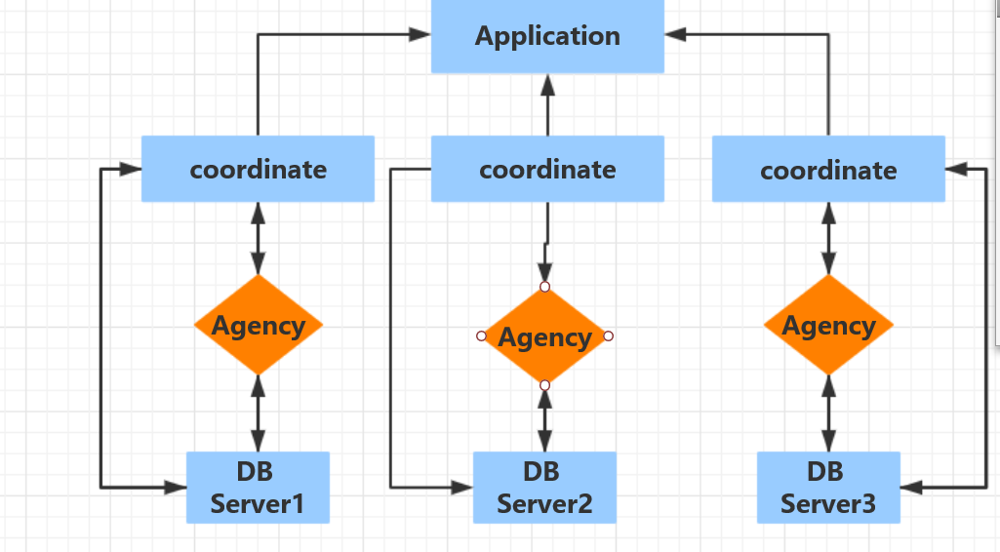
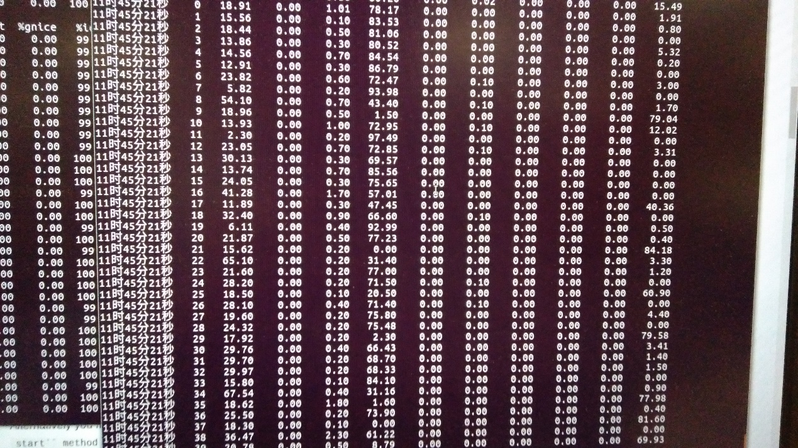
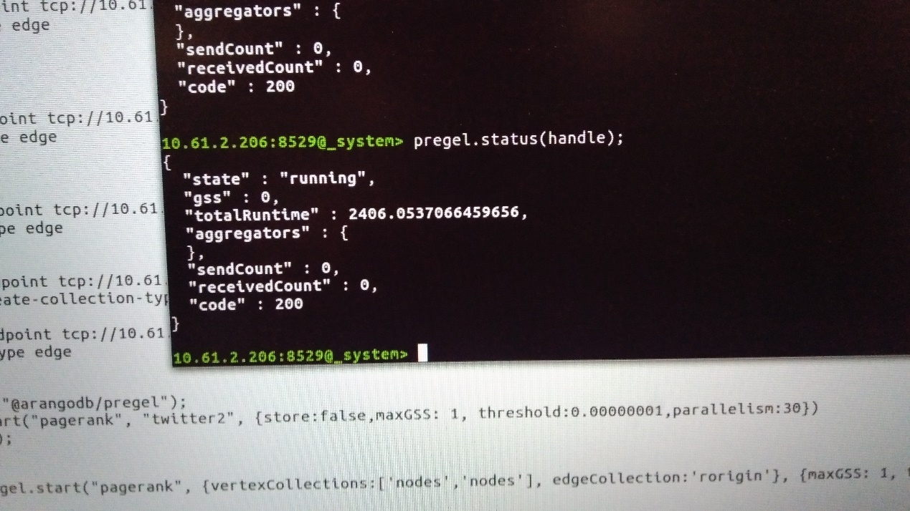

Research on ArangoDB single node and cluster mode
Single node test environment
10.61.2.206 Sugon server, 40-core CPU, 120G memory, mainly test two algorithms BFS and pagerank The Arangodb storage engine is divided into two types, Memory mapped file and RocksDB. The mmfile is based on memory. The advantage is that the concurrent read operation is more efficient. The disadvantage is that each time data is loaded into the memory, the index must be re-established. The deadlock problem occurred. The advantage of RocksDB is that the index is persisted to the hard disk, and the read and write are separated, and do not affect each other. The disadvantage is that compared with the memory query efficiency, the effect of using SSD as the data persistence medium may be improved.
ROCKSDB storage engine After importing the big picture, the memory occupies about 10G, and the actual persistent data hard disk occupies 18G. Both the BFS algorithm and the pagerank algorithm used more than 20 minutes in one iteration, and failed to produce specific results. In conclusion, although the read-write separation and index persistence have obvious advantages, low query efficiency is also a fatal weakness. Choosing this storage method requires a hard disk with high I/O speed.
MMFILE storage engine After importing the big picture, the memory occupies about 64G, and the actual persistent data disk occupies 22G. The following picture shows the actual memory occupancy

Using AQL's bfs traversal option, select 9, 10, and 40 respectively for the traversal depth, and found that the time converges to about 700s, and the depth of the BFS algorithm to traverse the entire graph is about 10, so the BFS time cost is as fast as 694s during testing. The actual log is as follows
Use the pregel framework integrated in arangodb to run the Pagerank algorithm one iteration time cost 380.776s, where the threshold is set to 0.000001ar function

Use the pregel framework integrated in arangodb to run the Pagerank algorithm for ten iterations. The time cost is 668.12s, where the threshold is set to 0.000001, and the time cost diagram is as follows

Two servers 10.61.2.206 10.61.2.127 Port used The coordinator layer opens three ports: 10.61.2.2206: 8529, 10.61. 2.127: 8529, 10.61.127: 8534 Use mmfile storage engine for testing, with 40 million nodes and 200 million edge sets The designed cluster architecture is:
MMFILE storage engine Memory usage after importing large images 10.61.2.206 occupies about 30G of memory, 10.61.2.127 occupies about 60G Use AQL's bfs traversal, try to traverse with different starting points, and find that the time converges to about 120 seconds BFS specific time screenshot: Using AQL's Dfs traversal, try to traverse with a depth of 10 from the unused starting point, and find that the time also converges to about 120 seconds, which is slightly slower than BFS DFS specific time screenshot: CPU usage during graph traversal (10.6.2.127):
To enable iterative graph processing for your data, you will need to ensure that your vertex and edge collections are sharded in a specific way. The pregel computing model requires all edges to be present on the DB Server where the vertex document identified by the _from value is located. This means the vertex collections need to be sharded by'_key' and the edge collection will need to be sharded after an attribute which always contains the'_key' of the vertex. Our implementation currently requires every edge collection to be sharded after a "vertex" attributes, additionally you will need to specify the key distributeShardsLike and an equal number of shards on every collection. Only if these requirements are met can ArangoDB place the edges and vertices correctly . Using the pregel framework integrated in arangodb to run the Pagerank algorithm for one iteration, the time cost is more than 40 minutes, and it fails to run out of the specific time, which is slower than the stand-alone mode, and the threshold is set to 0.000001
